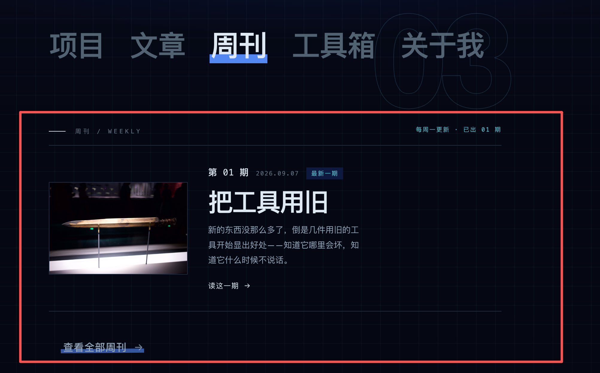

01 / 舞台
背景先形成一个场景
不是把卡片放进空白容器，而是先用一块有弧度的色面托住它们。
这次不再做“几个卡片横向排列”。借鉴你发来的参考图，把期刊卡片做成一个小场景：有潮汐、有前后关系，也有一条慢慢延伸的时间轴。
不是把卡片放进空白容器，而是先用一块有弧度的色面托住它们。
中心卡片抬高一点，旁边卡片退后一点，轮播关系不用解释就能看懂。
用节点和细线暗示周刊会持续更新，不需要虚构第二期内容。
当前期是唯一主角，下一期只以“即将出现”的邻卡存在。箭头、标题、时间轴都属于卡片舞台。

正在生长
不是把卡片做得更复杂，而是给它一个“时间正在经过”的感觉。你的页面仍然是深色、克制、带网格的，但期刊卡片会有一点柔软和生命力。